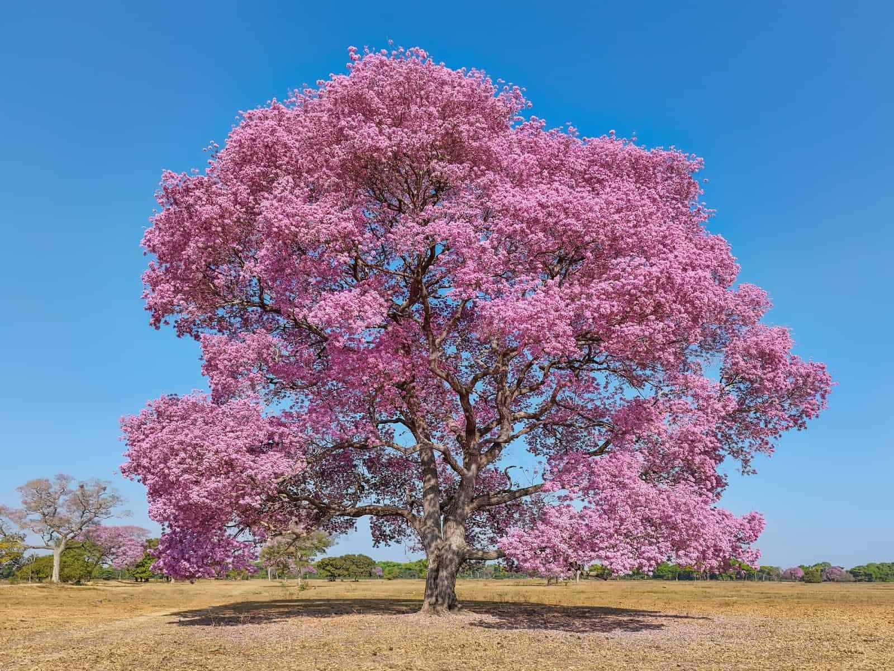
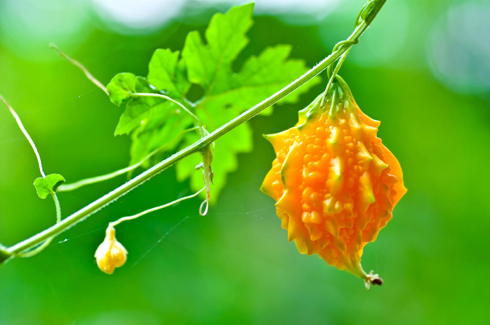
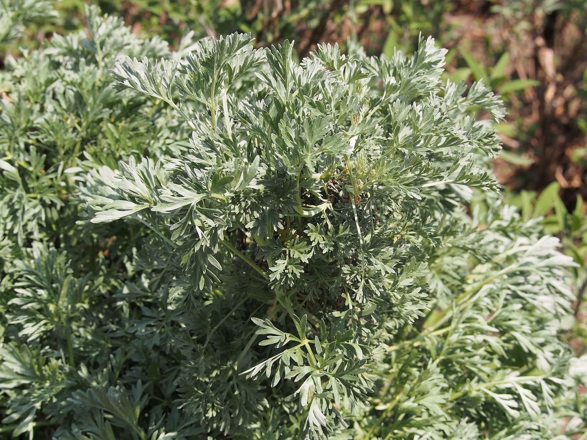
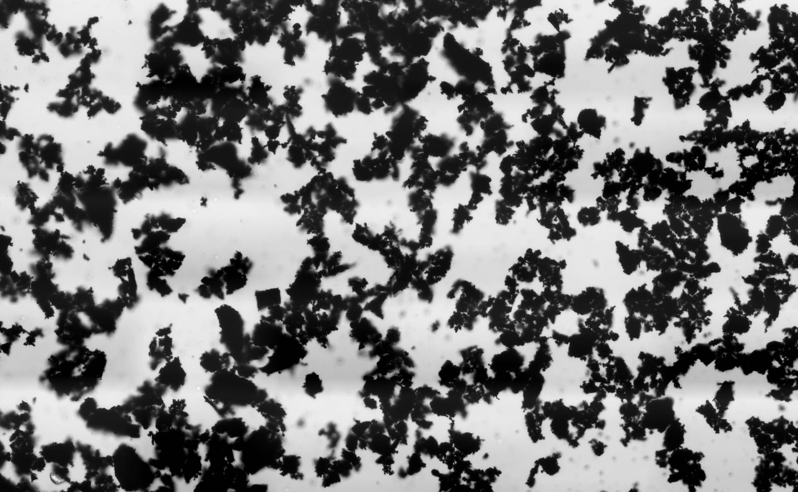

The bitter · Ingredient notes
Wormwood, and why Decolonise has a stop date
Decolonise is a bitter. Nine ingredients, and one of them is Artemisia absinthium. Wormwood is taken in short courses and then left alone, so the pack prints a limit instead of a subscription. Here is what is in the jar, what thujone is, why the gap is four months, and who should not take it at all.
By Reiss Davies Ausar7 September 20268 minute read

A man in the shop last month read the back of a Decolonise jar, looked up, and asked me why I had gone to the trouble of printing an instruction that loses me money. It says take it for 25 days, then leave at least four months. He had worked out, correctly and in about ten seconds, that a jar is 50 capsules and the dose is two a day, so a jar is exactly one course, and then the pack is asking him not to come back until the spring.
The answer is wormwood, and it is worth a page of its own rather than a line on a label. This is the one formula on our shelf that is a course rather than a habit, and every odd thing about the way it is sold comes out of that one fact. The late great Alfredo Bowman, known to most people as Dr Sebi, is a good part of the reason a shop like ours stands in a city like this one at all, and we are stood on the foundation of his work here.
01What a bitter is
A bitter is a category and not a promise. It means a preparation built out of plants that taste bitter, and it is one of the oldest shapes in the European herbal and in the Caribbean one, arrived at separately, by people who never met. Gentian, wormwood, angelica, artichoke leaf, quassia in the Caribbean, bitter melon right across Asia. The drinks trade took the same plants and kept the same word, which is why there is a bottle of Angostura behind most bars in this country and why vermouth carries the German name for wormwood on the front of it. The word travelled further than the plants did.
I am not going to tell you what a bitter does. That is not modesty and it is not coyness, it is the law, and I have set out elsewhere the claims we are not permitted to make and why the whole register is closed to a plant. What I can tell you is what is in the jar, what each of the plants is, where it grows, and how the thing is meant to be taken. That is the whole of this article and it is more than most pages about a bitter will give you.

02The nine
Seven botanicals, psyllium husk and activated charcoal. That is the list on the site and there is no tenth thing hiding underneath it. Here they are in the order the label declares them, with what each one actually is.
| Tabebuia impetiginosa | Pau d'arco, or lapacho. A forest tree from Brazil, Paraguay and northern Argentina that flowers pink before its leaves come in. The bark is the part that is usually sold. |
|---|---|
| Momordica charantia | Bitter melon. A climbing gourd eaten as a vegetable across South Asia, southern China and the Caribbean. About the most bitter thing anyone eats on purpose. |
| Petiveria alliacea | Guinea hen weed in Jamaica, anamu across much of Latin America. A Caribbean and Central American herb that smells of garlic, which is what alliacea refers to. |
| Syzygium aromaticum | Clove. Dried flower buds from a tree native to the Maluku Islands, picked before they open. Also on Seaking's declared list. |
| Dysphania ambrosioides | Epazote. A strong smelling Mexican herb, cooked with black beans in Oaxaca and Puebla. Older books have it as Chenopodium ambrosioides. |
| Artemisia absinthium | Wormwood. The bitterest plant in the European herbal, and the reason for the stop date. Section three onwards is about this one. |
| Piper nigrum | Black pepper. The fruit of a climbing vine, picked green and dried until it wrinkles and blackens. Kerala, Vietnam and Brazil grow most of it. |
| Psyllium husk | The husk of the Plantago ovata seed, grown mostly in Gujarat and Rajasthan and milled to a pale flake. It swells in water, which is why the protocol asks for a full 500 ml. |
| Activated charcoal | Coconut shell burned and then treated with steam until it is full of pores. A declared ingredient, not a filler, and the reason for the two hour rule in section six. |
Four of those nine are things you could walk out and buy in a good grocer's this afternoon: clove, pepper, bitter melon, and epazote if you know which shelf to look on down Lodge Lane. That is entirely normal for a bitter, because this category was built out of a kitchen, by cooks, in several countries at once, a very long time before anybody thought to put it in a capsule and charge for it.


Bitter melon is the one of that pair you are most likely to have eaten. The one you are most likely to have sat in a cupboard already is black pepper, which is the next picture, and it does not start out black.

03Wormwood
Artemisia absinthium is a silver-leaved perennial out of Eurasia and North Africa, naturalised here for centuries and growing perfectly happily on waste ground in this city, five minutes from the shop. It belongs to a genus that also holds mugwort, tarragon and sweet wormwood, so you have almost certainly eaten a relative of this plant without ever being introduced.

It is bitter in a way that is genuinely difficult to describe until you have had a piece of it on your tongue. A very small piece of leaf will take over your entire mouth and sit there for several minutes after you have swallowed, and there is nothing you can do about it but wait. Absinthe takes its name from this plant. Vermouth takes its name from the German Wermut, which is the same plant again. Both of those drinks exist because somebody wanted the taste badly enough to need the alcohol to carry it.

Herbals have handled wormwood the same way for a very long time: small amounts, short courses, then stop and leave it alone. You will find that same instruction in books written centuries apart, in different languages, that agree on almost nothing else at all. This is not a plant anybody has ever treated as a daily habit or wanted to, and the modern cautions attached to it are a tidied-up version of an old instruction rather than a new one.
04Thujone, and the figure I do not print
Thujone is a compound in the essential oil of wormwood, and it is the reason this plant is regulated rather than simply sold. It is one of the very few plant compounds named directly in the food flavourings rules, which set maximum levels for foods and drinks made with Artemisia species. That is why the recipe for absinthe is a legal document as much as it is a culinary one, and why it reads like one.

So the obvious question is how much thujone is sat in a capsule of Decolonise, and the honest answer is that I do not know. Nobody has measured it for this formula, and a number I cannot stand behind is worse than no number at all, so the sheet says exactly that in plain words rather than leaving a gap for you to quietly fill in yourcellf. The same goes for the milligram split across the nine, and for any extract ratio. Eight hundred milligrams a capsule is what I can tell you, so that is what I tell you.
What we print instead of a figure is a limit. Twenty-five days, then four months. That is the older and blunter instrument of the two, and it is the one we actually have in our hands.
One aside on the folklore, because somebody always raises it and I would rather get there first. The nineteenth century blamed thujone for a great deal that it does not appear to have done, and later work has put most of what was wrong with absinthe drinkers down to the sheer quantity of alcohol those men were putting away. That does not make the cautions optional. The cautions are older than the absinthe panic and they were arrived at quite independently of it.
Change consumption < change lifestyle < change thoughts < change vibration < change reality.
05Why the gap is four months
Fifty capsules, two a day, is 25 days. The jar is sized to the course, the course ends on the same morning the jar does, and then the pack asks for at least four months before the next one goes on a counter. Four months is the number on the pack and it is the number we keep to. Two a day for twenty-five days is one jar exactly, and that is not an accident, and neither is the gap.

Do the arithmetic on that and it comes out at two courses in a year, three only if the dates fall kindly. A shop that wanted to sell you the maximum would print no limit at all and let you carry on buying every month, and plenty of shops do exactly that and sleep well. That instruction costs us money every year and we publish it anyway, because a bitter belongs to a livit and not to a subscription, and I would rather hand you the limit than sell you four courses a year and call it loyalty.
It also makes the product easy to judge from the outside, which I am very much in favour of. Ask any shop, ours included, how long you should be taking something for. If nobody in the building will give you a number, you have learned what kind of shop you are stood in.
06Who should not take it
This is the part I would read twice. Decolonise has a longer list of people it is not for than anything else we sell, and the list is the product as much as the nine ingredients are.

- Pregnancy and breastfeeding. Do not take it. Wormwood is not taken in either, and that is the standard guidance, not a house rule.
- Epilepsy, or any history of seizures. Do not take it. That caution follows wormwood wherever it appears and it applies to this jar.
- Children. It is not for them. Keep it out of their reach.
- Anyone taking medicine of any kind. There is activated charcoal in the formula and charcoal can reduce how much of a tablet is absorbed, the contraceptive pill included. Leave at least two hours either side, and speak to your GP or pharmacist before you start rather than after.
- Anyone who wants to take it for longer than the jar lasts. That is not what it is. Two capsules a day, 25 days, then it goes back in the cupboard.
None of that is medical advice and none of it is me hedging. It is the set of questions I put to somebody across the counter before this particular jar goes into a bag, and if you order it online at eleven at night I have no way of asking you any of them, so they are printed here instead. Read them as though I had asked.
07How it is taken
Two capsules a day, with 500 ml of water. The full glass matters because there is psyllium husk in the formula and psyllium swells in water, so the water is part of the dose and not a suggestion alongside it. Do not take more than two in a day. If you miss a day, take two the next day rather than four.

Twenty-five days is the whole course, and the jar runs out on the same morning the course does, which was done on purpose so that nobody has to keep a count in their head. When the jar is empty the course is over. Finish a jar at the end of September and the next one is the end of January at the earliest. Write the date on the lid before you throw it out.
08Which jar
Decolonise is the only thing on our shelf carrying an end date. The daily jars are a completely different job, and normally we would point you at one here.
The gel line is paused. Environmental Health has not yet certified the premises the sea moss gel is made in, so Northern Soul, Purple Mwani, Nu Heru and the plain Chondrus Crispus gel are off the shelf until that is sorted, not gone for good. Seaking carries the same base plant as a capsule and is not affected.

Decolonise
£39.99The formula this article is about. Nine ingredients, 50 capsules at 800 mg, two a day with 500 ml of water for 25 days, then four months off.
Read the specification
Seaking
£39.99The daily, in capsule form. 50 at 800 mg, with 75 µg of iodine in each. Clove is on its declared list too.
Add to bagIf you are reading this because somebody sold you a jar of something similar and would not tell you how long to take it for, bring it into the shop on Smithdown Road, Tuesday to Sunday, and we will read the label out together. You should not have to come to Liverpool to find that out, and one day you will not have to.

Reiss Davies Ausar
Founder and formulator at Herbase. Trading online since 2019 and behind the counter at 599 Smithdown Road, Liverpool, since August 2024. Author of three books on herbal practice. Book an hour with him if you want to go into more detail.